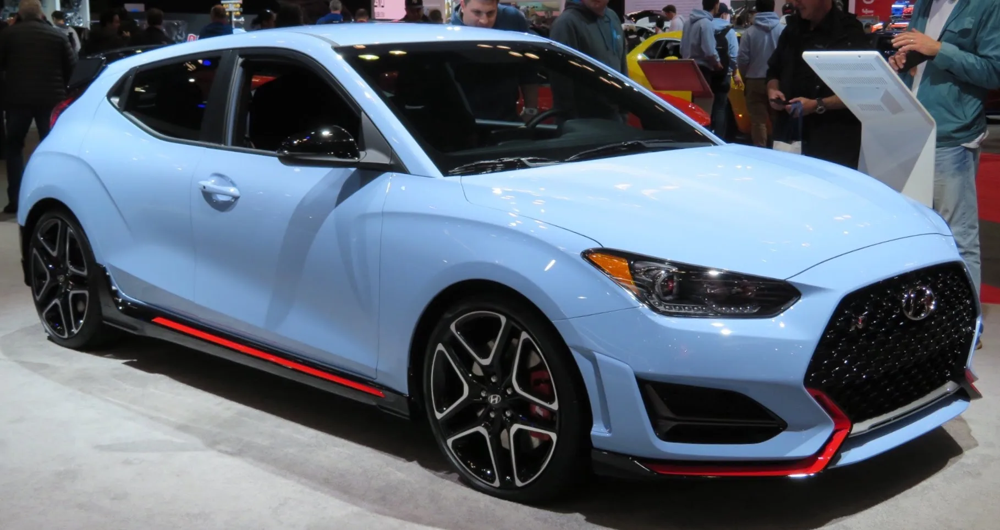
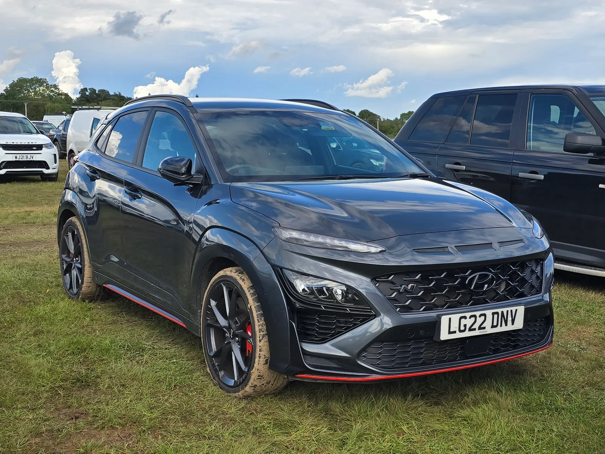
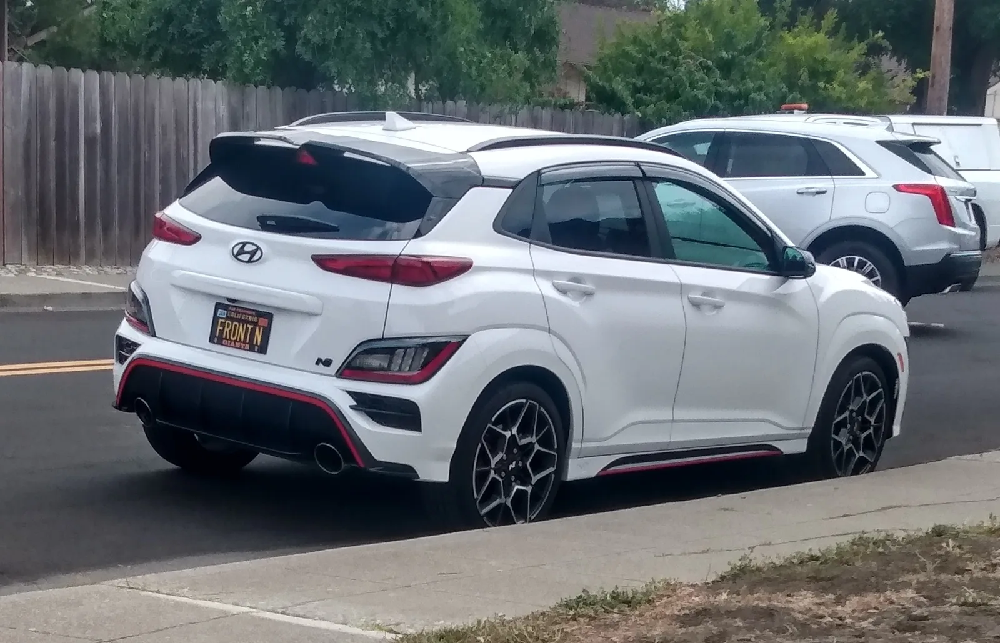
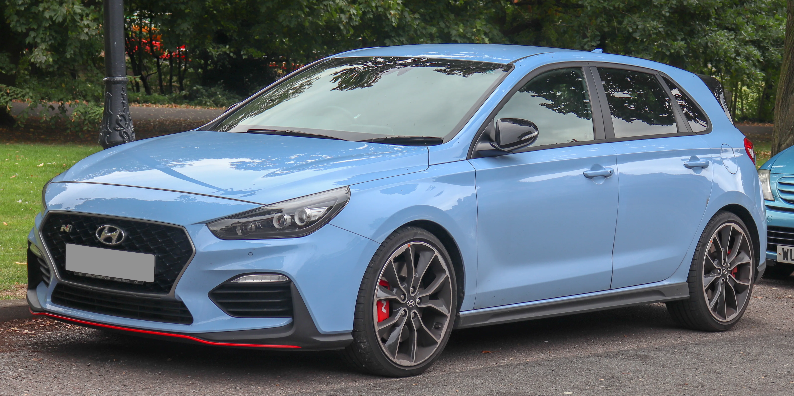

▲ 현대 아반떼 N(북미명 엘란트라 N). 2022년형 신차 가격은 3만 2,150달러였지만 중고 시세는 약 2만 6,200달러까지 내려왔다 ⓒ 현대차
미국 중고차 시장에서 현대의 고성능 N 라인업이 유독 가파른 감가를 겪고 있다. 겉보기엔 손해처럼 보이는 이 현상이, CarBuzz의 분석에 따르면 중고차 구매자에게는 오히려 기회가 된다. 낮았던 신차 가격과 상대적으로 약한 잔존가치가 맞물리면서, 동급 경쟁 모델보다 훨씬 저렴한 가격에 고성능차를 손에 넣을 수 있는 구간이 만들어졌기 때문이다.
1. 왜 이렇게 쌀까 — 낮은 신차가 + 약한 잔존가치

▲ 현대 벨로스터 N. 2020년형 기준 신차 2만 6,900달러였던 이 차는 중고 시장에서 약 1만 9,000달러에 거래된다 ⓒ Wikimedia Commons
CarBuzz는 현대 N 모델의 가격 매력을 '낮은 원래 가격'과 '다소 약한 잔존가치'의 조합으로 설명한다. 애초에 신차 가격 자체가 경쟁 모델보다 낮게 책정된 데다, 브랜드 프리미엄이 상대적으로 약해 감가 속도도 더 빠르다. 두 요인이 겹치면서 중고 시장에서는 경쟁 모델 대비 훨씬 큰 가격 격차가 만들어진다.
2. 경쟁 모델과 비교하면 격차가 더 뚜렷하다
| 모델(2019~2020년형 기준) | 중고 시세 |
|---|---|
| 현대 벨로스터 N | 약 1만 9,000달러 |
| 폭스바겐 골프 R | 약 2만 9,200달러 |
| 혼다 시빅 타입R | 약 3만 4,900달러 |
같은 연식대의 혼다 시빅 타입R과 비교하면 벨로스터 N의 중고가는 약 1만 6,000달러 가까이 저렴하다. 폭스바겐 골프 R과 비교해도 1만 달러 이상 차이가 난다. 성능 자체는 세 모델이 비슷한 급에서 경쟁하는 만큼, 순수하게 가격 대비 성능만 놓고 보면 현대 N 모델의 중고 매력이 두드러진다.
3. "10년 보증인 줄 알았는데"… 중고차엔 승계되지 않는다

▲ 현대 코나 N. 신차 구매 시에는 10년·10만 마일 파워트레인 보증이 적용되지만, 중고로 사는 두 번째 오너부터는 이 보증이 그대로 승계되지 않는다 ⓒ Wikimedia Commons
현대차 하면 흔히 "미국 최고의 보증"으로 불리는 10년·10만 마일 파워트레인 보증을 떠올리기 쉽다. 하지만 이 보증은 최초 구매자(신차 오너)에게만 적용되며, 중고로 넘어가는 순간부터는 조건이 크게 달라진다. 두 번째 오너부터는 파워트레인 보증이 5년·6만 마일로 줄어들고, 차체·일반부품을 포괄하는 5년·6만 마일 기본보증(New Vehicle Limited Warranty)의 잔여 기간만 자동으로 승계된다. 두 보증 모두 신차가 처음 등록된 시점(in-service date)부터 기간이 계산되기 때문에, 연식이 오래된 중고 N 모델일수록 남은 보증 기간은 거의 없다고 봐야 한다.
즉, "10년 보증이니 중고로 사도 안심"이라는 생각으로 접근하면 곤란하다. 벨로스터 N·아반떼 N처럼 이미 3~6년이 지난 매물이라면 기본보증조차 얼마 남지 않았거나 이미 만료됐을 가능성이 크다. 중고 N 모델을 알아본다면 딜러나 현대차 서비스센터에서 VIN으로 최초 등록일과 잔여 보증 기간을 반드시 확인해야, 낮은 가격만 보고 샀다가 정비 비용에서 손해를 보는 상황을 피할 수 있다.

▲ 코나 N 후면. 고성능 모델일수록 클러치·서스펜션 등 소모품 교체 이력이 보증 잔여 기간만큼이나 중요한 점검 포인트다 ⓒ Wikimedia Commons
4. 어떤 모델을 볼 것인가

▲ 현대 i30 N. 유럽 시장 기준 2018년형은 신차 2만 7,995파운드에서 중고 1만 8,400파운드까지 내려왔다 ⓒ Wikimedia Commons
기사에서 다룬 모델은 크게 넷이다. 해치백 쿠페인 벨로스터 N(2019~2022년), 유럽 시장의 대표 핫해치 i30 N(2018년~), 세단형인 아반떼 N(2022년~), 그리고 SUV 바디의 코나 N(2022년)이다. 차체 형태와 실용성이 제각각 다른 만큼, 일상 사용성과 성능 취향에 맞춰 고를 수 있는 선택지가 넓다는 것도 장점으로 꼽힌다.
5. 감가가 크다는 것의 다른 의미

▲ 아반떼 N 후면. 감가가 크다는 것은 되팔 때 손해라는 뜻이지만, 지금 사는 사람에게는 진입 장벽이 낮아진다는 의미이기도 하다 ⓒ 현대차
물론 감가율이 크다는 것은 나중에 되팔 때는 손해를 의미하기도 한다. 하지만 반대로 생각하면, 신차 때 프리미엄을 지불한 첫 오너 덕분에 두 번째 오너는 상대적으로 저렴하게 같은 성능을 누릴 수 있다는 뜻이기도 하다. 고성능차를 실사용 목적으로 구매하려는 사람에게는 이런 감가 구조가 오히려 유리하게 작용할 수 있다.
6. 정리 — 미국 중고차 시장 기준
체크포인트
- 이번 시세는 미국(일부 영국) 중고차 시장 기준이며, 국내 중고 시세와는 다를 수 있다.
- 현대 N 모델은 낮은 신차가 + 빠른 감가가 겹쳐 경쟁 모델보다 중고가가 눈에 띄게 낮다.
- 현대차의 10년·10만 마일 보증은 최초 오너에게만 적용되며, 중고 구매자는 5년·6만 마일 잔여 보증만 승계받는다.
- 구매 전에는 트랙 주행 이력, 클러치·서스펜션 소모품 상태, VIN 기준 잔여 보증 기간 등을 꼼꼼히 확인해야 한다.